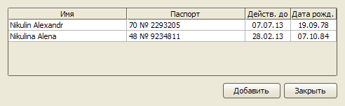

Туристы
Добавление туристов
Если турист уже пользовался услугами агентства и был внесен в базу туристов, нажмите кнопку "Найти", находящуюся над списком туристов.
В открывшемся справочнике выделите нужных туристов и нажмите кнопку "Выбрать".
В случае отсутствия информации о туристе в базе нажмите кнопку "Добавить", заполните открывшуюся
карточку туриста и нажмите кнопку "ОК".

Импорт списка туристов в заявку
Данная функция позволяет добавлять данные туристов в заявку, скопировав их в
буфер обмена из письма, текстового документа, таблицы Excel. Программа распознает
фамилии и имена туристов, даты рождений, номера, сроки действия паспортов и
вносит эти данные в таблицу туристов в заявке.
Например, у нас записаны данные туристов в текстовом файле:
Nikulin Alexandr 70 № 2293205 07.07.2013 19.09.1978
Nikulina Alena 48 № 9234811 28.02.2013 07.10.1984
Выделяем их и копируем в буфер обмена. В заявке нажимаем правую
кнопку мыши на таблице туристов. В появившемся контекстном меню выбираем пункт
"Вставить".

Появится таблица предпросмотра результата распознавания.

В этой таблице можно скорректировать данные туристов, если распознавание прошло
с ошибками. При нажатии на кнопку "Добавить" информация о туристах будет внесена в
заявку.
Механизм импорта имеет следующие ограничения:
- данные каждого туриста должны находится в различных строках (текстового документа
или таблицы Excel), - фамилии и имена туристов должны быть на английском языке,
- даты дней рождений и сроков окончания действия паспортов должны иметь следующие
форматы: дд.мм.гг, дд.мм.гггг, дд:мм:гг, дд:мм:гггг, дд/мм/гг, дд/мм/гггг, 01JUL10, 01JUL2010.
Изменение данных туристов
Чтобы открыть карточку туриста для редактирования прямо из заявки, нужно дважды кликнуть мышью по
соответствующей строке таблицы туристов.
Удаление туристов
Для удаления туристов из заявки выделите соответствующие строки в таблице туристов с помощью чекбоксов
в первой колонке и нажмите кнопку "Удалить".

Остались вопросы? Напишите нам на e-mail